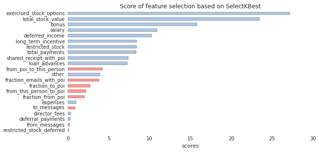
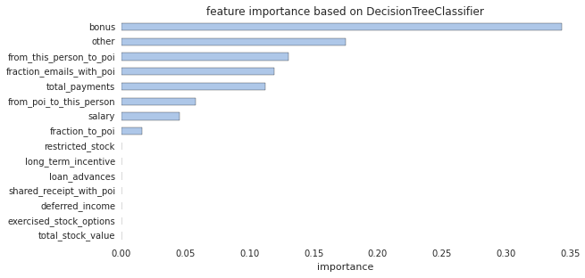
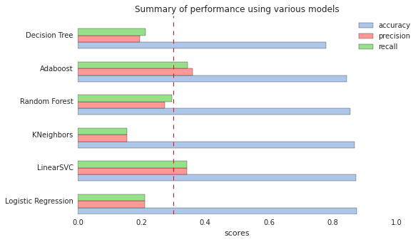
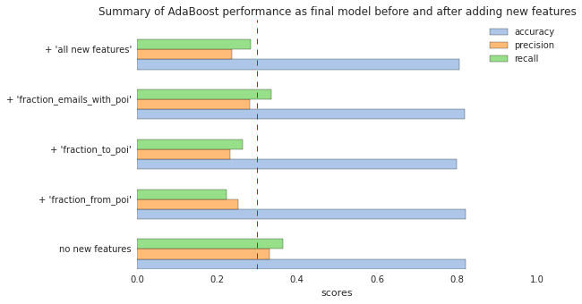

Enron was an infamous American company which was known for its extensive fraud. Enron marketed electricity and natural gas, delivered energy and other physical commodities around the world. It was once ranked the sixth largest energy company in the world. Most of the top Enron's executives were tried for fraud after it was revealed in November 2001 that Enron's earnings had been overstated by several hundred million dollars. Enron paid the top 140 executives $680 million in 2001. Among others, Kenneth Lay (founder, chairman of the Enron board directors) received $67.4 million and Jeffrey Skilling (former CEO) received $41.8 million. Moreover, the top executives sold their company stock prior to the company's downfall. The Enron scandal was one of the five largest audit and accountancy partnerships in the world and Enron was cited as the biggest audit failure.
On the other hands, the Enron Corpus is believed to be one of the largest publicly available collection of real-world email data. It has been widely used for research in social network analysis, natural language processing, and machine learning. The Enron financial records of former executives and employees were also released during the fraud trials.
The goal of this project is to develop machine learning algorithm, together with scikit-learn Python module, to predict the person of interest (POI) of a fraud from the email and financial (E+F) dataset. POIs were ‘individuals who were indicted, reached a settlement, or plea deal with the government, or testified in exchange for prosecution immunity.’ The E+F dataset from the Enron Corpus was used as features for the POI prediction.
Enron E + F dataset, which can be download on the Internet.
It contains:
True)There are many features with missing values (NaN) in the dataset:
| features | Numbers of NaN |
|---|---|
loan_advances |
142 |
director_fees |
129 |
restricted_stock_deferred |
128 |
deferral_payments |
107 |
deferred_income |
97 |
long_term_incentive |
80 |
bonus |
64 |
shared_receipt_with_poi |
60 |
from_this_person_to_poi |
60 |
from_messages |
60 |
to_messages |
60 |
from_poi_to_this_person |
60 |
other |
53 |
expenses |
51 |
salary |
51 |
exercised_stock_options |
44 |
restricted_stock |
36 |
email_address |
35 |
total_payments |
21 |
total_stock_value |
20 |
The features in the dataset are listed below:
financial feature:
'bonus', 'deferral_payments', 'deferred_income', 'director_fees',
'exercised_stock_options', 'expenses', 'loan_advances', 'long_term_incentive',
'other', 'restricted_stock', 'restricted_stock_deferred',
'salary', 'total_payments', 'total_stock_value'email feature:
'email_address', 'from_messages', 'from_poi_to_this_person',
'from_this_person_to_poi', 'to_messages', 'shared_receipt_with_poi', I removed the following entries in the dataset.
TOTAL is the summation of all the data points for each feature, and it is the biggest Enron E+F dataset outlier. THE TRAVEL AGENCY IN THE PARK is a travel agency, not the name of employee at Enron.LOCKHART EUGENE E missed all the feature values, and is not very useful in the dataset.email_address feature is also a outliner, because it is a person's email address and is not useful to identify POIs.This dataset contains lots of missing values (NaN). Many machine learning models don't like NaN. If we just fill the NaN values with zero, it may bias the data towards low values. The solution here is to fill the NaN values with median values for each feature.
In addition, there are three outliers in the features of salary and bonus. Two people (Jeffrey Skilling, Kenneth Lay) made salaries more than 1 million dollars, and two people (John Lavorato, Kenneth Lay) made a bonus of over 7 million dollars. However, I decided to not remove these extreme values from the dataset. It is because these extreme values might significantly affect the fraud at Enron and could be key parameters to identity the POIs.
We expect that POIs contact with each other more frequently than with non-POIs, so this might be key information to predict POIs. Therefore, I engineered the following three features:
| new features | description |
|---|---|
fraction from poi |
fraction of messages from a PO to that person I |
fraction to poi |
fraction of messages from that person to a POI |
fraction email with poi |
fraction of messages to and from that person to a POI |
As will be evaluated in more detail later, these new features did not improve the overall performance of the final algorithm, so they were not included in the final model.
Before feeding the features into any models, it is necessary to scale the feature values to be between 0 and 1. It is because if one feature has a broad range of values, the outcome will be governed by this particular feature. Therefore, the range of all feature values need to be normalized, so that each feature contributes approximately proportionately to the final outcome.
I used SelectKBest to search the best features in E+F feature list, according to the ANOVA F-value classification scoring function, as below. This step can get rid of some unnecessary features that may overfit the predictive model.

The top 15 features from SelectKBest were fed to the DecisionTreeClassifier algorithm to determine the feature importance.

I then removed the features by hand to optimize the score of the model. Finally, I chose the following features:
'exercised_stock_options', 'total_stock_value',
'bonus', 'salary', 'deferred_income'Initially, I fed the top 5 features that were found by SelectKBest to the following six algorithms with default parameters and compared their scores.
| Algorithm | Accuracy | Precision | Recall |
|---|---|---|---|
| Logistic Regression | 0.8747 | 0.2100 | 0.2100 |
| LinearSVC | 0.8727 | 0.3433 | 0.3433 |
| KNeighbors | 0.8680 | 0.1550 | 0.1550 |
| Random Forest | 0.8547 | 0.2720 | 0.2961 |
| AdaBoost | 0.8440 | 0.3598 | 0.3448 |
| Decision Tree | 0.7800 | 0.1955 | 0.2120 |

These models give high accuracies (>0.78), but they have low precision and recall (0.1~0.3). Among these tested models, LinearSVC and AdaBoost have precision and recall scores above 0.3.
Tuning the parameters of algorithm means to optimize the performance of the model to the particular features in the dataset. The performance can be determined by accuracy, precision, and recall scores. Here, I fined tune the parameters of LinearSVC and AdaBoost to get the optimal performance of the models.
To optimize the performance of model, I first scales the selected features to be between 0 and 1 using MinMaxScaler. The scaled features was fed into Principal Components Analysis (PCA) dimensional reduction algorithm as a part of GridSearchCV pipeline, when searching the optimal estimator parameters for particular classification algorithm. These two steps were used during each cross-validation step for the grid search and optimal parameters.
Finally, I end up using AdaBoost (with optimal Decision Tree estimator) , because its scores of precision and recall are the highest among other algorithms (> 0.3). The scores using for optimal AdaBoost and LinearSVC are below
| Algorithm | Accuracy | Precision | Recall |
|---|---|---|---|
| AdaBoost | 0.8227 | 0.3318 | 0.3650 |
| LinearSVC | 0.8733 | 0.3433 | 0.2200 |
The optimized parameters for AdaBoost is:
Pipeline(steps=[('pca', PCA(copy=True, n_components=3, whiten=False)), ('clf', AdaBoostClassifier(algorithm='SAMME.R',
base_estimator=DecisionTreeClassifier(class_weight=None, criterion='gini', max_depth=None,
max_features=None, max_leaf_nodes=None, min_samples_leaf=1,
min_samples_split=0.316227766017, min_weight_fraction_leaf=0.0,
random_state=42, splitter='random'),
learning_rate=0.5, n_estimators=1, random_state=42))])
The classic way of doing validation is to separate dataset into a training set and a testing set, and train the specific model on the training set. Then we test our model on the testing set to see how the performance evaluated from predicted values of the testing set match up the actual values for the testing set. Although this strategy can avoid overfitting data to our models, validation can go wrong if data splitting is biased. For example, in some cases, valuable information is only contained in the test set, not in the training set, or the size of the dataset is very limited. A proper way to solve these problems are to randomly select the observations for the test set (Stratified Shuffle Split validation) or to split dataset into multiple-consecutive sets (k-fold validation), and take the average of the testing results generated by the classifier.
In this project, I validated the dataset using StratifiedShuffleSplit function provided by sklearn. The n_iter (represented by the folds variable) was set to 100, and I used 90% data to train the model and 10% data to test the model. That means the model randomly samples 90% (10%) data to train (test) the model for each iteration, and averaged the scores for the model validation.
Finally, let's compare the performance of final model before and after adding the new features.

I found that these new features do not significantly improve the performance of the final model; therefore, they are not include in the feature list.
Accuracy: It represents the ratio of correct prediction out of the total prediction made. In other words, it means how many percentage of POIs the model can correctly predict. The average accuracy for optimal AdaBoost model is 0.8227, which means 82.27 % of predictions this model made were correct.
Precision: It represents the ratio of correct positive prediction (True positives) made out of the total positive prediction made (True positives + False positives) . Here, the positive prediction means predicting the employee who is a POI (POI returns "1"). The average precision of the optimal AdaBoost model is 0.3318, which means that 33.18 % of the total positive prediction made by model were correct.
Recall: It represents the ratio of correct positive prediction (True positives) made out of the actual total predictions, that were indeed positive (True positives + False negatives). The recall value in this project means what percentage of actual POIs in the test dataset were correctly identified. The optimal AdaBoost model achieves a recall of 0.3650, which means only 36.50 % of POI were correctly identified among all the actual POIs.
In many cases, the accuracy can be pretty good (>80%), but still lacking good precision or recall (<30%). It is important to note that a model has a very high accuracy does not mean it is a good model. There is also a trade-off between precision and recall, which needs to be balanced in the models. However, the Enron E+F dataset contains much more POIs than non-POIs (18 vs 127). With this unbalanced dataset, the precision and recall are useful metrics for evaluating the model. For example, the original Enron data contains 18 POIs over 145 employee. The optimal AdaBoost model can successfully identify 15 individual as POIs, where only 5 of them actually to be POIs. More data will definitely help to improve the performance and validation of models.